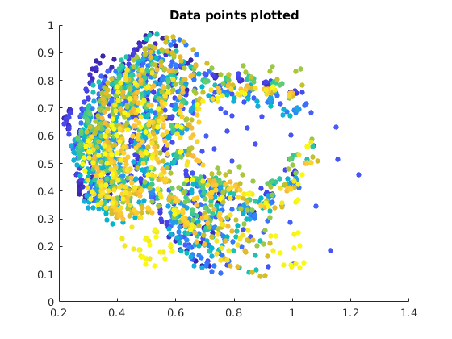

Contents
tic;
data = load("../../data/hands2D.mat");
points = data.shapes;
new = reshape(points,[2,56*40]);
sz = 25;
x = new(1,:);
y = new(2,:);
c = linspace(1,10,40);
d = zeros(1,56*40);
e=zeros(1,56*41);
e(1:56*40)=1;
f = zeros(1,56*40);
f(1:56*40)=1;
e(56*40+1:56*41) = 10;
for i = 1:40
d(1,1+56*(i-1):56*(i)) = c(i);
end
pause(0.2);
(d)Datasets Plot
figure;
hold on;
scatter(x,y,sz, d,'filled');
title('Data points plotted');
hold off;
[z_mean1,ztot1] = opti1(data);
[z_mean2,ztot2] = opti2(data);
x1 = ztot1(1,:);
y1 = ztot1(2,:);
x2 = ztot2(1,:);
y2 = ztot2(2,:);
pause(1);

(e) Mean Pointset and aligned pointsets
figure;
hold on;
scatter([x1,z_mean1(1,:)],[y1,z_mean1(2,:)],sz, e,'filled');
title('Code11 Mean pointset and all the aligned pointsets');
hold off;
pause(0.2);
figure;
hold on;
scatter([x2,z_mean2(1,:)],[y2,z_mean2(2,:)],sz, e,'filled');
title('Code22 Mean pointset and all the aligned pointsets');
hold off;
[V1,D1] = eigen(ztot1);
[V2,D2] = eigen(ztot2);
eigenv1 = diag(D1);
eigenv2 = diag(D2);
pause(0.2);
(f) Eigenvalues sorted plot
figure;
plot(fliplr(eigenv1.'),'r');
title('Code11 Eigen Values sorted');
pause(0.2);
figure;
plot(fliplr(eigenv2.'),'r');
title('Code22 Eigen Values sorted');
V1 = fliplr(V1);
dev1 = sqrt(fliplr(eigenv1.'));
deviation11 = dev1(1);
deviation12 = dev1(2);
deviation13 = dev1(3);
var11p = z_mean1 + 2*deviation11*reshape(V1(:,1),2,56);
var11n = z_mean1 - 2*deviation11*reshape(V1(:,1),2,56);
var12p = z_mean1 + 2*deviation12*reshape(V1(:,2),2,56);
var12n = z_mean1 - 2*deviation12*reshape(V1(:,2),2,56);
var13p = z_mean1 + 2*deviation13*reshape(V1(:,3),2,56);
var13n = z_mean1 - 2*deviation13*reshape(V1(:,3),2,56);
pause(0.2);
(g) Mean Pointset, Aligned Datapoints and ± 2–3 standard deviations around the mean plots
figure;
hold on;
scatter(x1,y1,sz, f,'filled');
plotc(var11p(1,:),var11p(2,:),'-b','Marker','o','MarkerFaceColor','b');
plotc(var11n(1,:),var11n(2,:),'b','Marker','o','MarkerFaceColor','b');
plotc(z_mean1(1,:),z_mean1(2,:),'r','Marker','o','MarkerFaceColor','r');
title('Code11 First mode of variation');
hold off;
pause(0.2);
figure;
hold on;
scatter(x1,y1,sz, f,'filled');
plotc(var12p(1,:),var12p(2,:),'b','Marker','o','MarkerFaceColor','b');
plotc(var12n(1,:),var12n(2,:),'b','Marker','o','MarkerFaceColor','b');
plotc(z_mean1(1,:),z_mean1(2,:),'r','Marker','o','MarkerFaceColor','r');
title('Code11 Second mode of variation');
hold off;
pause(0.2);
figure;
hold on;
scatter(x1,y1,sz, f,'filled');
plotc(var13p(1,:),var13p(2,:),'b','Marker','o','MarkerFaceColor','b');
plotc(var13n(1,:),var13n(2,:),'b','Marker','o','MarkerFaceColor','b');
plotc(z_mean1(1,:),z_mean1(2,:),'r','Marker','o','MarkerFaceColor','r');
title('Code11 Third mode of variation');
hold off;
V2 = fliplr(V2);
dev2 = sqrt(fliplr(eigenv2.'));
deviation21 = dev2(1);
deviation22 = dev2(2);
deviation23 = dev2(3);
var21p = z_mean1 + 2*deviation21*reshape(V2(:,1),2,56);
var21n = z_mean1 - 2*deviation21*reshape(V2(:,1),2,56);
var22p = z_mean1 + 2*deviation22*reshape(V2(:,2),2,56);
var22n = z_mean1 - 2*deviation22*reshape(V2(:,2),2,56);
var23p = z_mean1 + 2*deviation23*reshape(V2(:,3),2,56);
var23n = z_mean1 - 2*deviation23*reshape(V2(:,3),2,56);
pause(0.2);
figure;
hold on;
scatter(x2,y2,sz, f,'filled');
plotc(var21p(1,:),var21p(2,:),'b','Marker','o','MarkerFaceColor','b');
plotc(var21n(1,:),var21n(2,:),'b','Marker','o','MarkerFaceColor','b');
plotc(z_mean1(1,:),z_mean1(2,:),'r','Marker','o','MarkerFaceColor','r');
title('Code22 First mode of variation');
hold off;
pause(0.2);
figure;
hold on;
scatter(x2,y2,sz, f,'filled');
plotc(var22p(1,:),var22p(2,:),'b','Marker','o','MarkerFaceColor','b');
plotc(var22n(1,:),var22n(2,:),'b','Marker','o','MarkerFaceColor','b');
plotc(z_mean1(1,:),z_mean1(2,:),'r','Marker','o','MarkerFaceColor','r');
title('Code22 Second mode of variation');
hold off;
pause(0.2);
figure;
hold on;
scatter(x2,y2,sz, f,'filled');
plotc(var23p(1,:),var23p(2,:),'b','Marker','o','MarkerFaceColor','b');
plotc(var23n(1,:),var23n(2,:),'b','Marker','o','MarkerFaceColor','b');
plotc(z_mean1(1,:),z_mean1(2,:),'r','Marker','o','MarkerFaceColor','r');
title('Code22 Third mode of variation');
hold off;
toc;
Elapsed time is 5.224692 seconds.